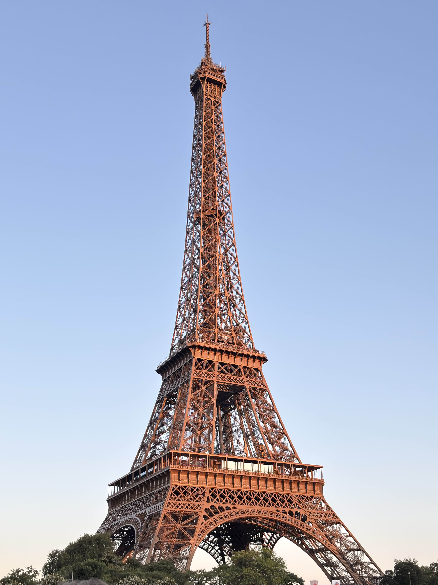
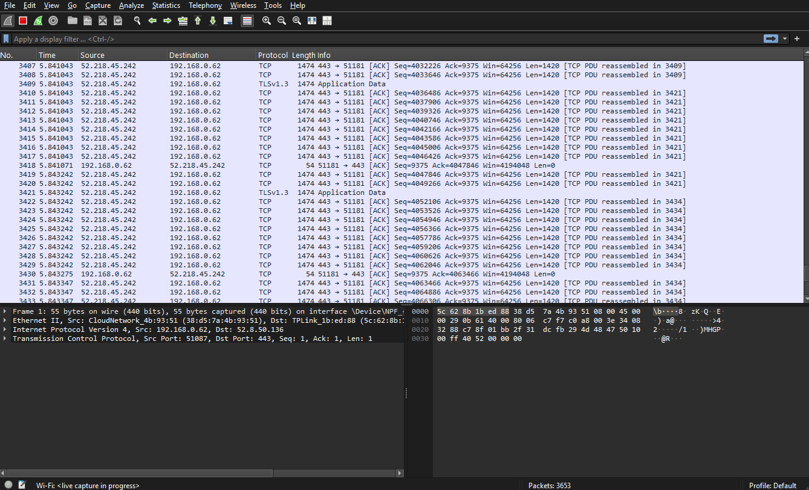
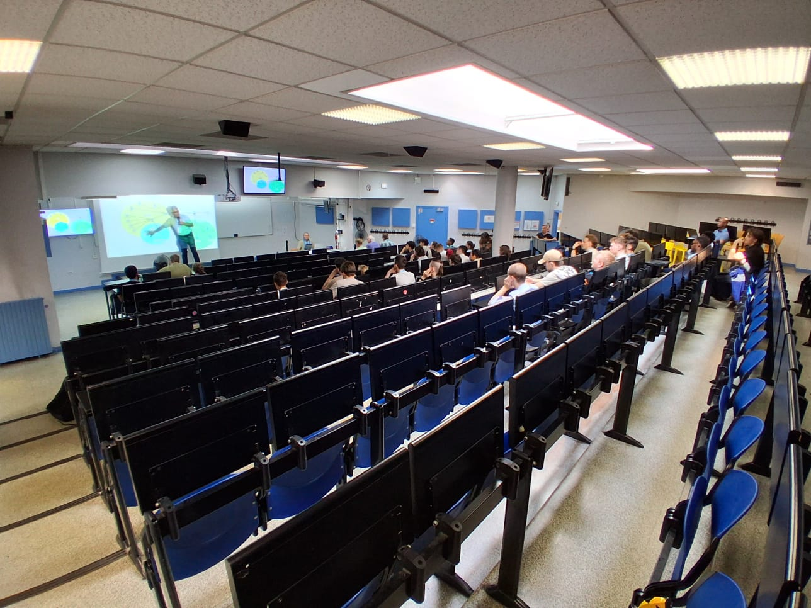
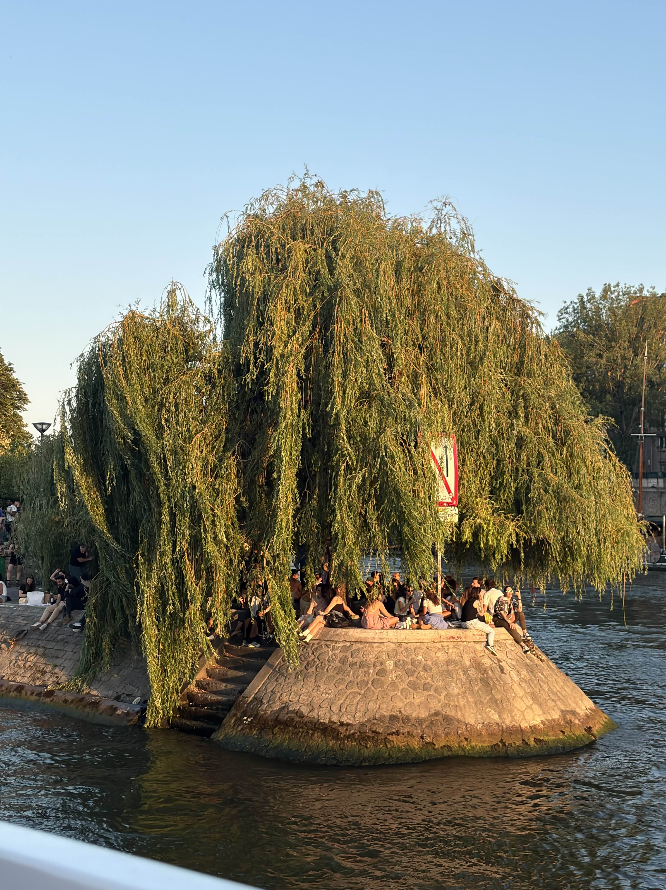
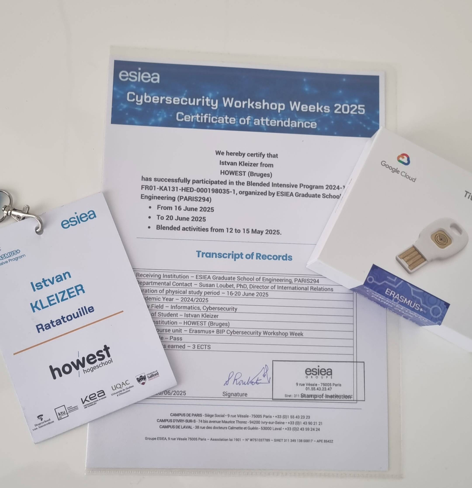

Monday was, as expected a strange day. New place, new people, but for us nothing new at school. We spent the morning listening to organizational information and getting a tour of the first campus. As our morning was quite fast and chaotic, the provided sweet pastry we had for breakfast was very welcome. This is also where many people, including us, got to meet the people we would be working with for the next week. There was tension in the air but not the kind we feel before an exam, talking with friends about things we might have missed while studying, but tension akin more to excitement - excitement about the new surroundings, people and stories we will inevitably get to experience together. While all that was expected, until the morning we did not know what subjects would actually be discussed and to our pleasure, it was not just a repeat of information we already got to learn during our studies. Firstly, our teams took part in a quick course about mobile security. We had this course this semester so the knowledge in our head was fresh and this helped us reinforce it. After that, we got to hear about OSINT, which our course has already covered quite extensively. This time though, it came with a fresh coat of paint, courtesy of the teacher from one of the other partner schools. We have not only got a refresh on our knowledge but also a fresh new perspective on possible usage of these tools while exploring new ones. We also got our hands on a phishing platform, different to the one we have used during our security project, which was exciting to use. After school, we were invited to the city by a student organization, where we got to talk to some local students, sharing and comparing our experiences while studying.

On the second day we worked with different forensics tools for both the first and second village. With Autopsy, Registry viewer, FTK Imager and similar tools we learned how to extract artifacts from a computer and how to analyze them. Now for the differences between the two village. On the Digital forensics village the hands on tasks were focused on analyzing a computer image as HDD, Registry hives, and RAMs. On the Network village we first learned about the importance of segmentation and other useful network security concepts. For the hands on part we mostly analyzed network traffic using Wireshark. Again, between the villages we had a delicious lunch, this time in form of fresh mixed bowls. At the end of the day, randomly have been selected a group to summarize the day.

Half way done with the week, we felt like we have already learned much more than we anticipated and there was still more to come. This day started a little different then the rest, because we had to go to a different location. From now on we were working inside the new bulding of the BIP. The first village was about Governance, where we learned about the importance of policies and procedures in cybersecurity. We also learned about the different roles and responsibilities within an organization. The second village was about lockpicking, where we learned about physical security and how to bypass locks. We were shown different types of locks, lock cores and how to bypass them. We even got to try it for ourselves, which was much harder than the teacher made it look. Between the villages we had a delicious lunch, this time in form of sandwiches again. At the end of the day, randomly have been selected a group to summarize the day. And as luck would have it, it was our group that had to present the summary. We presented our summary in front of the whole group, which was a great experience for us.

Second to last day, temperature is not the only thing getting higher. As the project is slowly ending, pressure is growing as well. Everyone wants to perform their best and hopefully score enough points to win the summary at the end of the week. Our team spent the day working away on handing in all the smaller projects we were given throughout the week, as well as working on the big final assignment – a presentation of everything that we learned during our week. Teams were once again divided into red and blue and given a network, partially real and partially made up. We were supposed to show off the skills we had learned mainly during the last couple of days. This was a huge task, and we were given an appropriate amount of time, working diligently until the next day. While we all tried to contribute as much as we could, submitting answers and solutions gathered during the week, for two of us the stakes were even higher on Friday because we had an exam scheduled specifically for the students from Howest who missed one during our stay in Paris. We were very thankful for the opportunity given to us by the lecturers and did not want to disappoint, leaving us juggling two big tasks at the same time. Thankfully though, despite all the rush, we managed to find the time to join the boat tour down the Seine. As it was scheduled for later in the day, we got to see Paris bathed in beautiful sunset orange. After that though, there was no time to take breaks and we were back again working on making sure everything worked out in the end.

We woke up on the morning of the last day in a rush, trying to make it to school as early as possible to hopefully have a little time to revise. For us, Friday was a race against time to both handle the exam responsibly and still make sure we put in the work to help our teams score well in the final presentation. The timing worked out, and we managed to get to campus ahead of the start of the exam, leaving just enough time to go over some notes. The teacher walked in, informed us about the rules of the exam, wished us luck, and off we went. We had a good feeling about the exam, answering questions at a steady pace, though it was unfortunately cut short. While that was a bit upsetting, there was no time to dwell on it—right after, it was back to preparing with our teammates and making sure everything was ready for the final assignment. Thankfully, both groups received later presentation slots, which gave us a little extra time to polish and practice. When the moment came, our presentations went smoothly. We stuck to the time limits while making sure to highlight what we felt were the most important aspects of our solutions. After all the stress and pressure of the day, we could finally sit back and wait for the results. When they were announced, both of us were proud of how our teams performed: one team earned 2nd place and the other 3rd. It felt like a rewarding finish to an intense but memorable week. With the competition behind us, we gathered a small group of friends we had gotten close with and headed out to explore Paris one last time, enjoying the city at night before saying our goodbyes.